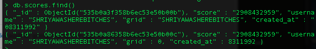
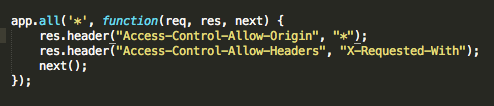

Security Assessment of 2048 Gamecenter
By Shriya Nevatia • 4/24/2014
Introduction
This assessment tests the security of the 2048 Gamecenter web application developed by Dan Kim for Comp20 assignment 5.
The 2048 Gamecenter is a web application hosted on Heroku that uses Node.js, Express, and MongoDB. It allows players of the game 2048 to save their high scores and view the high scores of other players, saved by particular usernames and with associated timestamps. The gamecenter app must be connected to a modified version of 2048 which sends user data to the app.
This document is a security analysis of the 2048 Gamecenter for my peer in Comp 20 (Web Programming at Tufts University). We learned about various common security issues in class, and in this document I explore some vulnerabilities that I found in this student's Gamecenter app.
Methodology
Security vulnerabilities, put simply, are issues that allow unauthorized viewers to exploit or otherwise tamper with an app or website to break it, invalidate it, or otherwise compromise it. Issues at different levels of depth can allow a user to break the app in different ways (for example, changing the background color of a page is clearly not as severe as breaking the functionality of a government website and redirecting it to a Rick Roll youtube video).
I found the following vulnerabilities by attempting to break the app at different levels; first I modified input to the app in a client-facing field (this is something any user could do). Second, I looked at the database from my classmate, and third, I looked at the given code from my classmate. The last two could not have been done easily by someone who did not have access to the app's original program files.
Abstract of Findings
The following is an overview of the three security vulnerabilities I found:
- Users could input anything in the field for their username; to demonstrate this, I embedded a YouTube video in the place of a text username. This is an issue because a user could theoretically input any kind of script to make the app work incorrectly.
- The database in unprotected, which means the storage system for all the users' data can be modified by users who do not have any validation or credentials of the creator.
- The page has a CORS Universal Allow, which means that a request can be made from anywhere to this page. Users should only get data from and send data to secure and validated servers.
Issues Found
-
No Input Validation
- Issue: User can insert scripts in the "username" field
- Location: In 2048 game, prompt field that appears at end of game
- Severity: low; They cannot do much to ruin the functionality of the app itself.
- Description: The user can input a video, image, javascript function, or other non-standard type of input in the text field.
- Proof of vulnerability:
- Resolution: I recommend adding a function that ensures that the user can only enter a certain number of characters (some reasonable amount for a username, perhaps 30) and can only enter lowercase letters, uppercase letters, or numerals. Therefore they cannot use any of the punctuation necessary to write HTML or Javascript code.
-
Mongo Database Unprotected
- Issue: Users who did not create Mongo Database can insert, remove, or modify data if they run Mongo in the application repository.
- Location: Mongo server running on another computer
- Severity: medium; The user can falsify data and basically ruin the functionality of the app to render it useless. They cannot really mess with the creator's computer or data, though.
- Description: The user must run mongo and look at data stored in the database for this application, and they can lookup, add, remove, or modify the existing data in the specified collection.
- Proof of vulnerability: 
- Resolution: I would recommend that the creator requires authentication for access to their Mongo database in the form of a username and password so that other users cannot access this data.
-
CORS Universal Allow
- Issue:
- Location: / Page where issue was found
- Severity: of issue (low/medium/high) plus justification
- Description: of issue; how did you find it? Screenshot is great
- Proof of vulnerability: 
- Resolution: Validate response and Add some form of authentication / credentials checking via
withCredentials property on XMLHttpRequest (e.g.,
cookie)
Conclusion
Overall, this app was built according to the specifications for the assignment but is not at an appropriate level of security to be released for public use. If the 2048 game itself could be "messed with" this easily, someone would have broken it quite quickly (considering how insanely popular it was). In the future, an app like this would be useful for users who wanted to keep track of personal or global high scores, so long as the users had a limited type of information they could input, and the database was protected and secure.
// future considerations and recommendations with costs